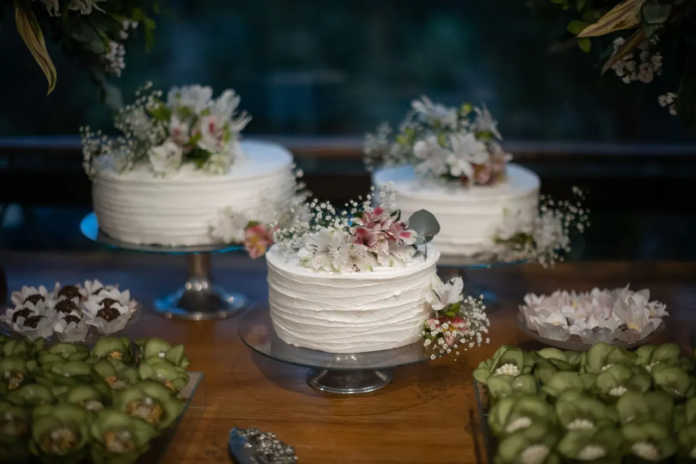

Galactic Dust Sweets · Orlando, FL
Pastel de boda en Orlando, diseñado para ustedes
Hacemos tu pastel de boda en Orlando a la medida: lo diseñamos con la decoración, los colores y el número de invitados de su boda, y lo preparamos a mano con ingredientes de alta calidad. Escríbannos por WhatsApp en cuanto tengan la fecha para reservar su lugar en el calendario.

- Hecho a mano
- Todo personalizado
- Entregas en Orlando y alrededores
- Lunes a sábado, 9:00 a. m. – 6:00 p. m.
¿Qué estilo de pastel de boda pueden hacer?
El que vaya con su boda. Como todo es personalizado, no trabajamos con un catálogo cerrado:
- Clásico y elegante: líneas limpias, tonos suaves y acabados finos.
- Moderno: colores intensos, texturas y detalles metálicos, como los acentos plateados de nuestros bizcochos.
- Temático: si su boda tiene un concepto (por ejemplo, una noche estrellada), lo trasladamos al pastel.
Para proponerles un diseño nos sirven fotos de la decoración, la paleta de colores, las flores y el lugar.
¿Cuántos pisos necesita un pastel de boda?
Depende del número de invitados y del efecto que quieran en la mesa. Adaptamos el tamaño a su lista: con el número aproximado de personas les proponemos la cantidad de pisos y la forma de servirlo. [POR CONFIRMAR: si ofrecen pastel de corte adicional o pisos decorativos]
¿Se puede escoger un sabor distinto para cada piso?
Como cada pastel se hace por encargo, el sabor y el relleno los eligen ustedes. Si quieren combinar sabores en distintos pisos, coméntennoslo al pedir y les confirmamos qué se puede hacer según el diseño. [POR CONFIRMAR: si ofrecen degustación previa]
¿Con cuánta anticipación se encarga un pastel de boda?
Las bodas se planean con tiempo, y el pastel también. Como referencia, escríbannos al menos de 3 a 4 semanas antes, y antes si la boda cae en temporada alta. [POR CONFIRMAR: validar tiempo promedio]
Según la celebración, puede pedirse un depósito para apartar la fecha. Aceptamos todos los medios de pago. Les damos los detalles al confirmar el pedido.
¿Entregan el pastel en el lugar de la boda?
Sí, entregamos en Orlando y alrededores. Coordinamos con ustedes o con su organizador de bodas la hora y el lugar de entrega para que el pastel llegue en perfecto estado. Revisa zonas y horarios en entregas y tiempos. [POR CONFIRMAR: si incluyen el montaje en la mesa]
Galería · Trabajos reales
Pasteles de boda reales
Fotos de pasteles de boda hechos por Galactic Dust Sweets. [POR CONFIRMAR: subir fotos de bodas descargadas del Instagram]. Ve más en nuestro Instagram.
@galacticdustsweets
Ver InstagramMás dulces para su celebración
Para la mesa de postres o los recuerdos para los invitados, miren nuestros postres caseros, panes y chocolates. ¿Tienen dudas sobre pagos o alergias? Están respondidas en preguntas frecuentes.
Galactic Dust Sweets
Reserven la fecha de su boda
Envíennos la fecha, el lugar, el número de invitados y su estilo. Respondemos de lunes a sábado, de 9:00 a. m. a 6:00 p. m.